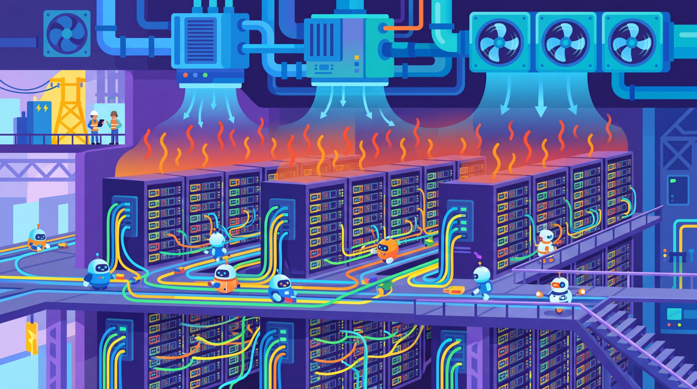

You can have the best algorithm in the world, but without the right hardware it is just a very elegant way to waste electricity.
Sparky AI Agent
GPU Comparison: The Accelerator Landscape
Choosing the right GPU is one of the most consequential decisions in any LLM project. The table below summarizes the key specifications of the most widely used accelerators for LLM workloads as of early 2026. Specifications are for the data center (SXM or OAM) variants unless otherwise noted.
| GPU | Vendor | HBM | Memory BW | BF16 TFLOPS | FP8 TFLOPS | Interconnect | TDP |
|---|---|---|---|---|---|---|---|
| A100 SXM | NVIDIA | 80 GB HBM2e | 2.0 TB/s | 312 | N/A | NVLink 3 (600 GB/s) | 400W |
| H100 SXM | NVIDIA | 80 GB HBM3 | 3.35 TB/s | 990 | 1,979 | NVLink 4 (900 GB/s) | 700W |
| H200 SXM | NVIDIA | 141 GB HBM3e | 4.8 TB/s | 990 | 1,979 | NVLink 4 (900 GB/s) | 700W |
| B100 | NVIDIA | 192 GB HBM3e | 8.0 TB/s | 1,750 | 3,500 | NVLink 5 (1,800 GB/s) | 700W |
| B200 | NVIDIA | 192 GB HBM3e | 8.0 TB/s | 2,250 | 4,500 | NVLink 5 (1,800 GB/s) | 1,000W |
| MI300X | AMD | 192 GB HBM3 | 5.3 TB/s | 1,307 | 2,615 | Infinity Fabric (896 GB/s) | 750W |
| L40S | NVIDIA | 48 GB GDDR6 | 864 GB/s | 362 | 733 | PCIe 4.0 (64 GB/s) | 350W |
HBM = High Bandwidth Memory, the total VRAM available for model weights, activations, and KV cache. Memory BW = bandwidth between the memory and compute cores; this is often the bottleneck during inference. BF16/FP8 TFLOPS = theoretical peak throughput in tera floating-point operations per second at each precision. TDP = thermal design power, relevant for cooling and electricity costs.
Key Takeaways from the Spec Sheet
- Memory capacity determines which models you can run. A 70B parameter model in BF16 requires approximately 140 GB of VRAM, meaning a single A100 (80 GB) cannot hold it, but a single H200 (141 GB) or MI300X (192 GB) can.
- Memory bandwidth determines inference speed. The tokens-per-second rate during autoregressive decoding is almost entirely memory-bandwidth-bound, because each token requires reading the full model weights from memory.
- Compute FLOPS determine training speed. Training throughput scales with raw TFLOPS because matrix multiplications dominate the computation. The jump from H100 to B200 is roughly 2.3x in BF16.
- Interconnect matters for multi-GPU setups. Tensor parallelism across GPUs requires fast inter-GPU communication. NVLink/NVSwitch is far superior to PCIe for multi-GPU training and inference.
Cloud Pricing Comparison
Cloud GPU pricing is volatile and varies significantly by provider, region, commitment level, and availability. The table below provides approximate on-demand hourly rates as of early 2026. Prices should be treated as rough guidelines; always check current pricing before making decisions.
| GPU | AWS | GCP | Azure | Lambda | RunPod |
|---|---|---|---|---|---|
| A100 80GB (1x) | $4.10/hr (p4d) | $3.67/hr (a2) | $3.67/hr (NC A100) | $1.29/hr | $1.64/hr |
| H100 80GB (1x) | $8.50/hr (p5) | $8.34/hr (a3-mega) | $8.20/hr (NC H100) | $2.49/hr | $3.29/hr |
| H200 141GB (1x) | ~$10.50/hr (p5e) | ~$10.00/hr (a3-ultra) | ~$10.00/hr | $3.49/hr | $4.49/hr |
| L40S 48GB (1x) | $2.80/hr (g6e) | $2.50/hr (g2) | $2.40/hr | $0.99/hr | $0.74/hr |
| 8x H100 cluster | $65.00/hr (p5.48xlarge) | $64.00/hr (a3-mega) | $63.00/hr | $19.92/hr | $26.32/hr |
These figures are approximate on-demand rates. Reserved instances (1-3 year commitments) can reduce costs by 30-60%. Spot/preemptible instances offer 60-80% savings but can be interrupted. GPU-specialized providers like Lambda and RunPod typically offer lower per-GPU rates but fewer managed services. Prices change frequently, so verify before budgeting.
Cost Reduction Strategies
- Spot instances with checkpointing: For training jobs that can tolerate interruptions, spot pricing offers dramatic savings. Implement checkpoint saving every 15-30 minutes to minimize lost work.
- Right-size your GPU: An L40S is often sufficient for inference of quantized models up to 30B parameters. Reserve H100/H200 for training or large model serving.
- Time-of-day arbitrage: Some cloud regions have lower demand overnight, potentially improving spot availability.
- Multi-cloud strategy: Use the cheapest available GPU across providers for batch workloads. Tools like SkyPilot automate this.
Choosing the Right GPU for Your Task
Different workloads stress different GPU characteristics. The following guide maps common LLM tasks to recommended hardware configurations.
Inference (Serving a Model)
Inference is typically memory-bandwidth-bound. The priority is: (1) enough VRAM to hold the model weights plus the KV cache, and (2) high memory bandwidth for fast token generation.
| Model Size | Precision | VRAM Needed | Recommended GPU(s) |
|---|---|---|---|
| 7B-8B | 4-bit (GPTQ/AWQ) | ~6 GB | Any consumer GPU (RTX 3060 12GB+), L40S |
| 7B-8B | BF16 | ~16 GB | RTX 4090, L40S, A100 |
| 13B-14B | 4-bit | ~10 GB | RTX 4080+, L40S |
| 70B | 4-bit | ~40 GB | 1x A100 80GB, 1x H100, 1x MI300X |
| 70B | BF16 | ~140 GB | 2x A100, 1x H200, 1x MI300X |
| 405B (Llama 3.1) | FP8 | ~405 GB | 8x A100, 4x H200, 3x MI300X |
Fine-Tuning (LoRA / QLoRA)
Fine-tuning requires enough memory for the model weights, optimizer states, gradients, and activations. QLoRA reduces this dramatically by quantizing the base model to 4-bit.
| Model Size | Method | VRAM Needed | Recommended GPU(s) |
|---|---|---|---|
| 7B-8B | QLoRA (4-bit) | ~10 GB | RTX 3060 12GB, RTX 4070 |
| 7B-8B | Full fine-tune (BF16) | ~60 GB | 1x A100 80GB, 1x H100 |
| 70B | QLoRA (4-bit) | ~48 GB | 1x A100 80GB, 1x H100, RTX 4090 (tight) |
| 70B | Full fine-tune (BF16) | ~500 GB | 8x A100 80GB, 4x H200 |
Pretraining from Scratch
Pretraining is compute-bound: raw TFLOPS and multi-GPU scaling efficiency matter most. Large-scale pretraining also requires massive storage throughput and reliable networking.
| Model Size | Training Tokens | Approx. GPU-Hours (H100) | Hardware Recommendation |
|---|---|---|---|
| 1B | 100B tokens | ~500 H100-hours | 8x H100 node (2-3 days) |
| 7B | 1T tokens | ~10,000 H100-hours | 32-64x H100 cluster (1-2 weeks) |
| 70B | 15T tokens | ~1,700,000 H100-hours | 2,000+ H100 cluster (months) |
Cost Estimation Formulas
Back-of-the-envelope calculations help you budget before committing to expensive GPU rentals. The formulas below provide rough but useful estimates.
Estimating VRAM for Inference
The memory needed to load a model depends on its parameter count and the numerical precision of the weights:
Where bytes per parameter depends on precision: FP32 = 4 bytes, BF16/FP16 = 2 bytes, FP8 = 1 byte, INT4 = 0.5 bytes. Add 10-20% overhead for the KV cache, activation memory, and framework buffers.
Estimating Training Compute
The total compute required for one epoch of training can be estimated by the "6ND" rule:
Where N is the number of model parameters and D is the number of training tokens. The factor of 6 accounts for the forward pass (2ND) and backward pass (4ND). To convert from total FLOPs to GPU-hours:
MFU (Model FLOPS Utilization) represents what fraction of theoretical peak throughput you actually achieve. Typical values are 30-50% for well-optimized distributed training setups.
Estimating Fine-Tuning Cost
For LoRA/QLoRA fine-tuning, a practical rule of thumb:
In practice, QLoRA fine-tuning of a 7B model on 50K examples (each ~512 tokens) for 3 epochs takes approximately 2-4 hours on a single A100. Double the time for a 13B model, and roughly 5x for a 70B model.
Estimating Inference Cost per Token
For API-served models:
Where tokens per second depends on the model, hardware, batching strategy, and quantization level. A well-optimized vLLM deployment of a 70B model on an H100 can typically achieve 1,000-3,000 output tokens per second with continuous batching across concurrent requests.
For inference: buy memory bandwidth. For training: buy FLOPS. For fine-tuning: buy enough VRAM to hold your model in the cheapest possible precision. When in doubt, start with the smallest GPU that fits your model, measure actual performance, and scale up only if needed.
Quick Reference: Common Configurations
| Use Case | Budget Pick | Performance Pick | Monthly Cost Estimate |
|---|---|---|---|
| Serve 8B model (quantized) | RTX 4060 Ti 16GB | L40S | $50-$500 |
| Serve 70B model (quantized) | 1x A100 80GB | 1x H200 | $1,000-$7,000 |
| QLoRA fine-tune 8B | RTX 4070 12GB | A100 40GB | $5-$50 per run |
| QLoRA fine-tune 70B | 1x A100 80GB | 1x H100 | $50-$300 per run |
| Pretrain 1B model | 8x A100 80GB | 8x H100 | $5,000-$20,000 |
| Pretrain 7B model | 32x H100 | 64x H100 | $100,000-$500,000 |
For inference of quantized models up to ~14B parameters, and for QLoRA fine-tuning of 7B-8B models, consumer GPUs (RTX 4070/4080/4090) are a cost-effective choice. The RTX 4090 with 24 GB of VRAM remains one of the best price-performance options for individual researchers and small teams.
What Comes Next
Continue to Appendix H: Model Card Quick Reference for the next reference appendix in this collection.